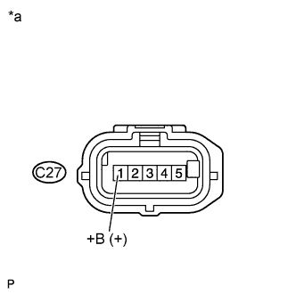

DTC P0102 Mass or Volume Air Flow Circuit Low Input |
DTC P0103 Mass or Volume Air Flow Circuit High Input |
| DTC No. | DTC Detection Condition | Trouble Area |
| P0102 | Mass air flow meter voltage is below 0.2 V for 3 seconds (1 trip detection logic). |
|
| P0103 | Mass air flow meter voltage is higher than 4.9 V for 3 seconds (1 trip detection logic). |
|
| MAF (gm/s) | Malfunction |
| Approximately 0.0 |
|
| 160.0 or more | Open in E2G circuit |
| Frequency of Operation | Continuous |
| 1.READ VALUE USING INTELLIGENT TESTER (MAF) |
Connect the intelligent tester to the DLC3.
Start the engine.
Turn the tester on.
Enter the following menus: Powertrain / Engine and ECT / Data List / All Data / MAF.
Read the values displayed on the tester.
| MAF (gm/s) | Proceed to |
| 0.0 | A |
| 160.0 or more | B |
| Between 1.0 and 160.0* | C |
|
| ||||
|
| ||||
| A | |
| 2.INSPECT MASS AIR FLOW METER ASSEMBLY (POWER SOURCE VOLTAGE) |
|  |
Disconnect the mass air flow meter connector.
Turn the engine switch on (IG).
Measure the voltage according to the value(s) in the table below.
| Tester Connection | Switch Condition | Specified Condition |
| C27-1 (+B) - Body ground | Engine switch on (IG) | 11 to 14 V |
| *a | Front view of wire harness connector (to Mass Air Flow Meter Assembly) |
|
| ||||
| OK | |
| 3.CHECK HARNESS AND CONNECTOR (MASS AIR FLOW METER - ECM) |
Disconnect the mass air flow meter connector.
Disconnect the ECM connector.
Measure the resistance according to the value(s) in the table below.
| Tester Connection | Condition | Specified Condition |
| C27-3 (VG) - C29-14 (VG) | Always | Below 1 Ω |
| C27-2 (E2G) - C29-13 (E2G) | Always | Below 1 Ω |
| C27-3 (VG) or C29-14 (VG) - Body ground | Always | 10 kΩ or higher |
|
| ||||
| OK | |
| 4.INSPECT MASS AIR FLOW METER ASSEMBLY |
Inspect the mass air flow meter assembly (Click here).
|
| ||||
| OK | ||
| ||
| 5.CHECK HARNESS AND CONNECTOR (MASS AIR FLOW METER - NO. 1 INTEGRATION RELAY) |
Disconnect the mass air flow meter connector.
Remove the No. 1 integration relay from the engine room relay block.
Measure the resistance according to the value(s) in the table below.
| Tester Connection | Condition | Specified Condition |
| C27-1 (+B) - 1B-4 | Always | Below 1 Ω |
| C27-1 (+B) or 1B-4 - Body ground | Always | 10 kΩ or higher |
|
| ||||
| OK | ||
| ||
| 6.CHECK HARNESS AND CONNECTOR (MASS AIR FLOW METER - ECM) |
Disconnect the mass air flow meter connector.
Disconnect the ECM connector.
Measure the resistance according to the value(s) in the table below.
| Tester Connection | Condition | Specified Condition |
| C27-3 (VG) - C29-14 (VG) | Always | Below 1 Ω |
| C27-2 (E2G) - C29-13 (E2G) | Always | Below 1 Ω |
| C27-3 (VG) or C29-14 (VG) - Body ground | Always | 10 kΩ or higher |
|
| ||||
| OK | |
| 7.CHECK HARNESS AND CONNECTOR (SENSOR GROUND) |
Disconnect the mass air flow meter connector.
Measure the resistance according to the value(s) in the table below.
| Tester Connection | Condition | Specified Condition |
| C27-2 (E2G) - Body ground | Always | Below 1 Ω |
|
| ||||
| OK | ||
| ||